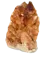
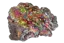

Correspondence Grimoire
Energy

Bushman Red Cascade QuartzCalciteCarnelian
GoethiteKundalini is an energy force that spontaneously rises from the Root Chakra, moving it’s way through the chakras and activating each as it ascends.
In traditional teachings, the rising of the Kundalini is thought to be triggered by - or the result of - an increase in spiritual understanding and Consciousness.
Practicing Yoga can encourage the energy to rise up.
The Cosmic Web
From the perspective of science, everything is energy. Magicians see the world as surrounded by an energetic matrix that connects everything to everything else. This matrix, or cosmic web, envelops the earth and permeates all things that exist here, extending throughout the solar system and beyond. The web pulses with subtle vibrations that magicians, psychics, and other sensitive individuals can feel. Regardless of whether you are consciously aware of these vibrations, you are affected by them, and your own personal energy vibrations continually affect the matrix.
Energy Signatures
Everything in the world emits an energy vibration of some kind. Different things have different energy patterns, resonances, or signatures. These resonances reach out to touch one another in a series of crisscrossing lines all around the world, rather like a spider web. They connect the physical and nonphysical worlds. These energetic connections are what enable witches to work magick, even over a long distance. You send a thought or emotion along one of these energy lines to wherever or whomever you wish to reach. When you do magick, you purposefully tap into this infinite web, tugging on one of the lines. As you become skilled at using magick, you learn to navigate the cosmic web just as easily as you surf the internet.
Sensing Energy Currents
The first step is to sensitize yourself to these vibrations and become aware of the energetic field around you. Simple exercises can help develop this awareness. Hold your palms facing each other about a foot apart and slowly move them closer together without touching. You may feel warmth, coolness, tingling, or other sensations as your hands approach. You might even sense a color or emotion. Running your hands around natural objects like stones or plants without physical contact can reveal impressions and sensations from their energy fields. Working with a partner who moves their hand toward you while your eyes are closed helps you recognize when you sense another person's energy field.
The Cosmic Information Repository
Like the internet, the cosmic web teems with information. All ideas, words, actions, and emotions going back to the beginning of time are stored in this energetic matrix. Anyone who knows how to access it can tap this vast storehouse of knowledge. Inventors, artists, musicians, and other creative people often claim to receive insights without knowing where they came from. Scientists report epiphanies that lead to new discoveries. All these people are connecting to the cosmic web and drawing knowledge from it.
Moving Energy
The core act of magick is the movement of energy: raising it, focusing it, directing it, and sending it outward. The powers of nature work through the practitioner as the energies and spirits of the Earth, the Elementals (emanations of the Divine), and the Divine itself.
Spirit Energy vs. Psychic Energy
Spirit energy is the Divine essence of a being. Psychic energy, by contrast, is what beings use for communication and reception. Both flow through all living things, but they serve distinct functions in magickal work.
The Cyclic Nature of Energy
Energy moves in cycles. Once used, it returns to the Earth for redistribution. Nothing is lost, only transformed and recycled back into the web of life.
Animism and Pantheism in the Craft
The Craft views the world as both animistic and pantheistic. Everything is alive, and respect is shown to all things. This understanding forms the foundation for working with the energies that surround us.
Awareness as Deliberate Practice
Awareness is a deliberate activity. It involves opening the intuitive and cognizant senses, the conscious and subconscious mind, to receive information from animate surroundings. This is not passive observation but an active reaching out.
Working with Natural Energies
Manipulating energies requires three things: alertness to their presence, willingness to communicate, and permission from the entity involved in the magickal process. No energy should be taken or directed without acknowledgment and consent.
Training Awareness
The extension of awareness can be trained by speaking to plants, animals, birds, insects, rocks, and other natural beings. The response comes from in-dwelling spirits as a new personal alertness to things previously unnoticed, along with a heightened intuitive perception of how these things feel and react.
Communication Before Gathering
Communication with plants, rocks, and other natural beings is necessary before taking anything for spellwork. State what is needed, ask permission to take a portion of a plant or other material, and express gratitude.
The Gift Exchange
Always give a gift to receive a gift. Suitable offerings include milk, grain, a beverage, coffee grounds, crushed eggshells, or a coin. Other forms of reciprocity include drawing a circle of protection around the plant, offering a blessing, or drawing a pentagram on the plant, around it, or on the ground in front of it.
Altered States of Awareness
No drugs or alcohol are needed to achieve an altered state of awareness. Meditation, breathing, chanting, and dancing are all effective methods for shifting consciousness.